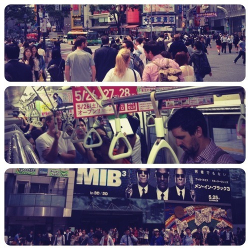

What does it mean to be cool? And what does Cool Japan means to the Japanese? Or what do we (non-Japanese) had in our head when we talked about Cool Japan? Or maybe the question should be, “what metrics shall we (non-Japanese) use to measure the coolness factors of Japan?”
The concept of Cool Japan campaign (クールジャパン), along with the term ‘Gross National Cool’ was coined by journalist Douglas McGray back in 2002 as an expression of Japan’s emergent status as a cultural super power. Interestingly enough, the campaign is being run by the Ministry of Economy, Trade and Industry (METI), rather than by a cultural body. This ambitious programme aims to use Japan’s creative strengths in fields like fashion, design and music both to improve Japan’s 'brand’, which has been damaged by the Fukushima nuclear accident, and to increase cultural exports almost five-fold by 2020.
The term “Gross National Cool” basically used to describe the country’s position as an arbiter of taste in art, fashion, style, and technology the world over. This bold description would probably fit Japan's brand image of coolness a decade ago but seeing how the country seems to be stuck in 2nd gear and unable to get itself back on track; especially now with China taking the stage as the new superpower aggressively, I highly doubt that Japan still deserves to be called cool. At least not anymore.

It’s easy for us to be duped by all the flashy cool stuff that Japan has to offer (anime, manga, fashion, etc.), but on a more serious note how do we measure the real economic value of Japan’s creative industries that presumably what gives Cool Japan certain leg of credibility? Mitsuhiro Yoshimoto offers pretty interesting analysis on the creative industry trend in Japan.
Unsurprisingly not everyone was onboard about Branding Japan as Cool as written on The Economist. Takashi Murakami, the Japanese artist superstar, is actually declares war on Cool Japan campaign. Murakami clearly takes issue with ad agencies’s co-optation of the Cool Japan initiative and the money that comes with it. “I can’t understand why artists get involved with the gimmicks of ad agencies who are simply trying to turn a profit with Cool Japan,” the artist tweeted. “It really pisses me off to think that a few individuals are in bed with each other, licking up the money that came out of our country’s deficit. And the ad agencies who strut about pretending to be creative disgusts me.”
Furthermore, and to second Murakami, I think Cool Japan is losing its coolness. Recent stunt by a 22-year old Japanese artist and chef, Mao Sugiyama, who surgically removed his own genitals, cooks and serves them for $250 to six paying dinner guests was more than enough to show the underlying sickness of Japanese society. Granted that this might be too extreme of an example to dispute something as superficial as Cool Japan campaign.
Don’t get me wrong. If we were to keep the discussion shallow and superficial, then by all means let’s do so. I love a lot of things that came out of Japan. I even naively thought that everyone grew up reading manga, watch anime and spent countless hours trying to finish Super Mario Bros games. And between my friends we often lament on how Miyazaki has become too mainstream for us. That we smirks snobbishly when people claimed to be manga or anime fans yet quoting household names like Bleach, Death Note, Afro Samurai, or Fullmetal Alchemist.
However, set aside all those wow factors…
I seem unable to shake the feeling of wanting to be critical and challenge the Cool Japan jargon. Allow me to remind you that Japan is a country who largely ignore international cry upon its whaling practice, who rewrite history of its own war crimes (and never formally apologize for it), and whose people committed more inappropriate conduct in public space… the list go on. And more over, this also a society where cannibalism isn’t illegal, by the way. So how come a country like this could wear the Cool Badge and none challenge them for it?
Granted no society (country) is perfect by all means. Each and one of them has skeletons in their closets. But if I were Japan, I won’t be too ballsy as to call myself cool. After all, as one of my classmate appropriately put, we’re not supposed to call ourselves cool. Other people should.